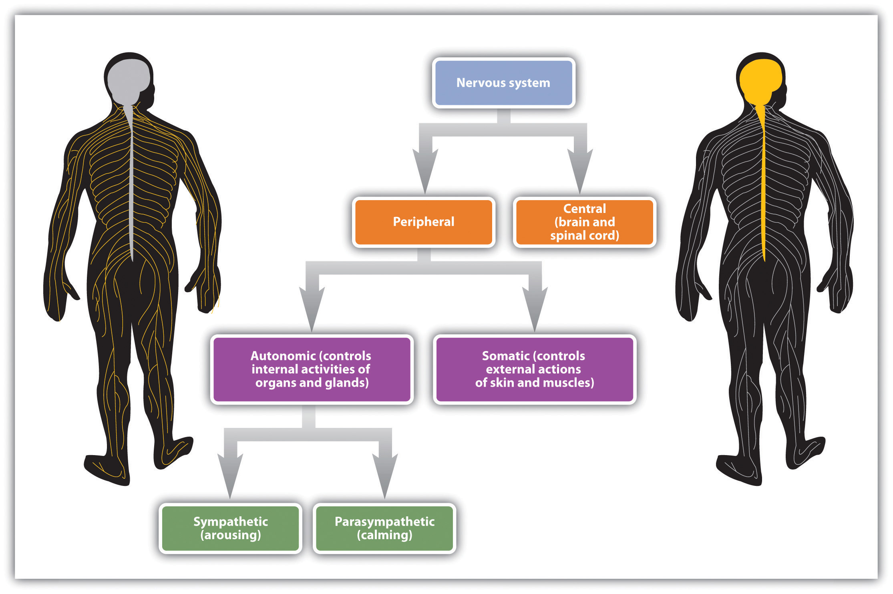
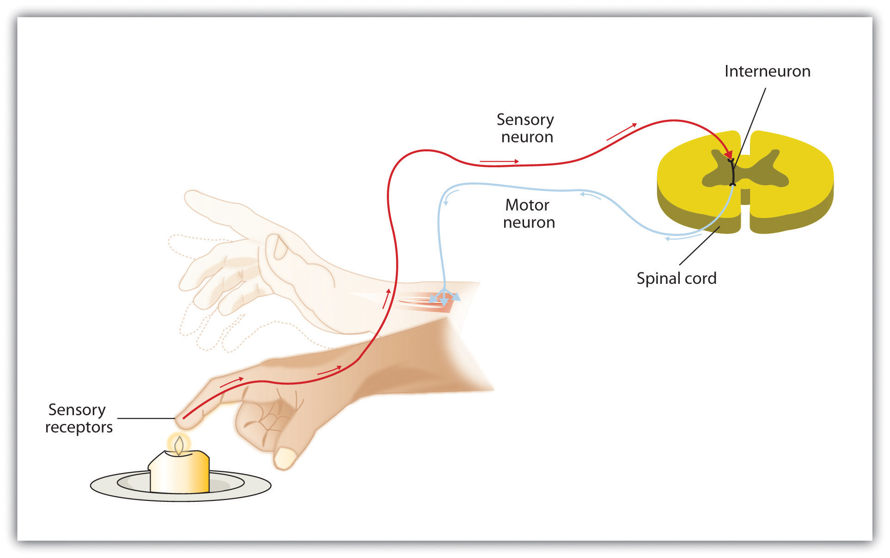
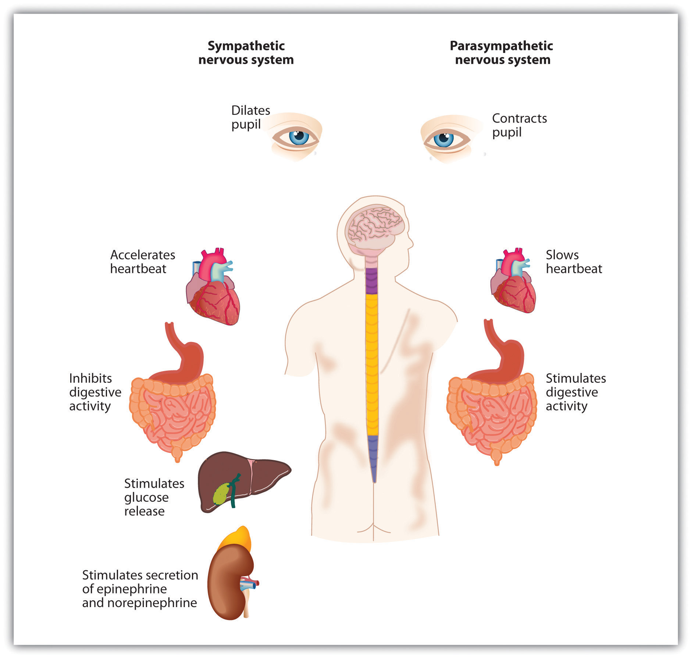
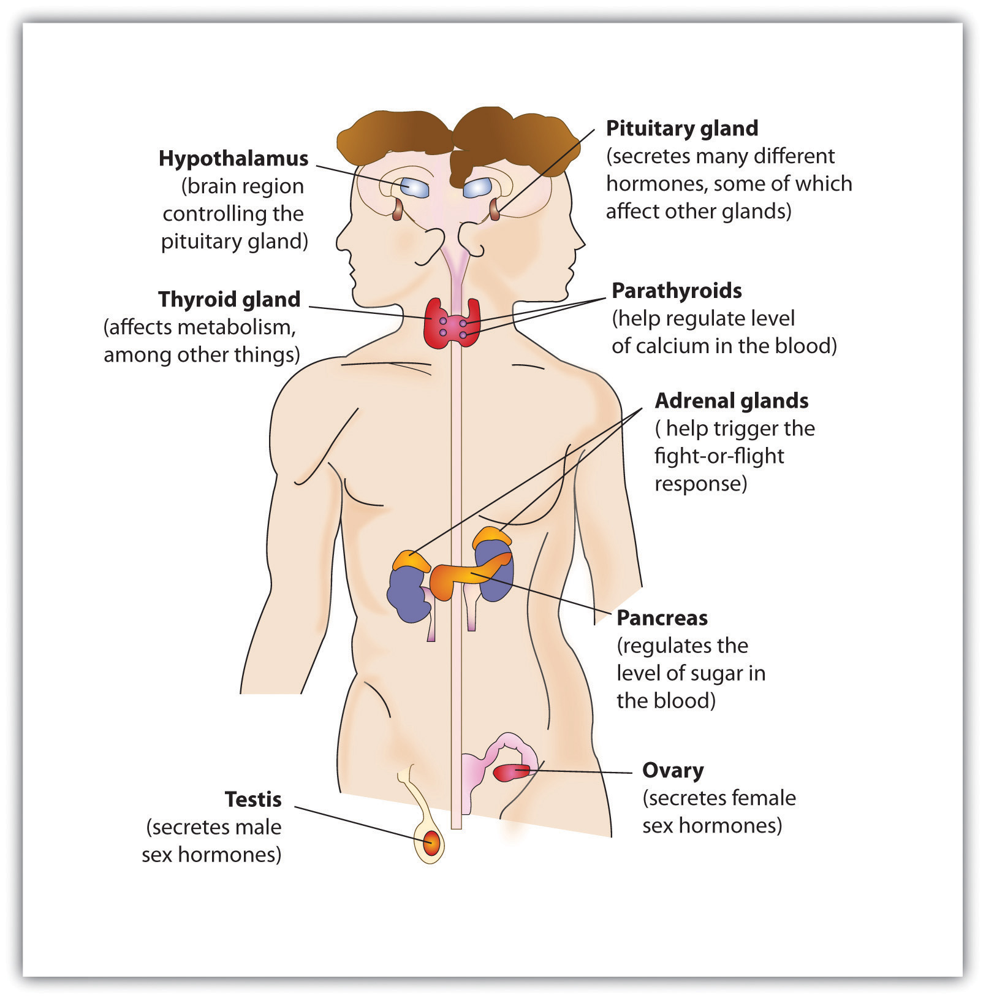

Now that we have considered how individual neurons operate and the roles of the different brain areas, it is time to ask how the body manages to “put it all together.” How do the complex activities in the various parts of the brain, the simple all-or-nothing firings of billions of interconnected neurons, and the various chemical systems within the body, work together to allow the body to respond to the social environment and engage in everyday behaviors? In this section we will see that the complexities of human behavior are accomplished through the joint actions of electrical and chemical processes in the nervous system and the endocrine system.
The nervous system (see Figure 3.17 "The Functional Divisions of the Nervous System"), the electrical information highway of the body, is made up of nervesA bundle of interconnected neurons that fires in synchrony to carry messages.—bundles of interconnected neurons that fire in synchrony to carry messages. The central nervous system (CNS), made up of the brain and spinal cord, is the major controller of the body’s functions, charged with interpreting sensory information and responding to it with its own directives. The CNS interprets information coming in from the senses, formulates an appropriate reaction, and sends responses to the appropriate system to respond accordingly. Everything that we see, hear, smell, touch, and taste is conveyed to us from our sensory organs as neural impulses, and each of the commands that the brain sends to the body, both consciously and unconsciously, travels through this system as well.
Figure 3.17 The Functional Divisions of the Nervous System
Nerves are differentiated according to their function. A sensory (or afferent) neuronA neuron that carries information from the sensory receptors. carries information from the sensory receptors, whereas a motor (or efferent) neuronA neuron that transmits information to the muscles and glands. transmits information to the muscles and glands. An interneuronThe most common type of neuron, responsible for communicating among neurons., which is by far the most common type of neuron, is located primarily within the CNS and is responsible for communicating among the neurons. Interneurons allow the brain to combine the multiple sources of available information to create a coherent picture of the sensory information being conveyed.
The spinal cordThe long, thin, tubular bundle of nerves and supporting cells that extends down from the brain. is the long, thin, tubular bundle of nerves and supporting cells that extends down from the brain. It is the central throughway of information for the body. Within the spinal cord, ascending tracts of sensory neurons relay sensory information from the sense organs to the brain while descending tracts of motor neurons relay motor commands back to the body. When a quicker-than-usual response is required, the spinal cord can do its own processing, bypassing the brain altogether. A reflexAn involuntary and nearly instantaneous movement in response to a stimulus. is an involuntary and nearly instantaneous movement in response to a stimulus. Reflexes are triggered when sensory information is powerful enough to reach a given threshold and the interneurons in the spinal cord act to send a message back through the motor neurons without relaying the information to the brain (see Figure 3.18 "The Reflex"). When you touch a hot stove and immediately pull your hand back, or when you fumble your cell phone and instinctively reach to catch it before it falls, reflexes in your spinal cord order the appropriate responses before your brain even knows what is happening.
Figure 3.18 The Reflex
The central nervous system can interpret signals from sensory neurons and respond to them extremely quickly via the motor neurons without any need for the brain to be involved. These quick responses, known as reflexes, can reduce the damage that we might experience as a result of, for instance, touching a hot stove.
If the central nervous system is the command center of the body, the peripheral nervous system (PNS) represents the front line. The PNS links the CNS to the body’s sense receptors, muscles, and glands. As you can see in Figure 3.19 "The Autonomic Nervous System", the peripheral nervous system is itself divided into two subsystems, one controlling internal responses and one controlling external responses.
The autonomic nervous system (ANS)The division of the PNS that governs the internal activities of the human body, including heart rate, breathing, digestion, salivation, perspiration, urination, and sexual arousal. is the division of the PNS that governs the internal activities of the human body, including heart rate, breathing, digestion, salivation, perspiration, urination, and sexual arousal. Many of the actions of the ANS, such as heart rate and digestion, are automatic and out of our conscious control, but others, such as breathing and sexual activity, can be controlled and influenced by conscious processes.
The somatic nervous system (SNS)The division of the PNS that controls the external aspects of the body, including the skeletal muscles, skin, and sense organs. is the division of the PNS that controls the external aspects of the body, including the skeletal muscles, skin, and sense organs. The somatic nervous system consists primarily of motor nerves responsible for sending brain signals for muscle contraction.
The autonomic nervous system itself can be further subdivided into the sympathetic and parasympathetic systems (see Figure 3.19 "The Autonomic Nervous System"). The sympathetic division of the ANSInvolved in preparing the body for behavior, particularly in response to stress, by activating the organs and the glands in the endocrine system. is involved in preparing the body for behavior, particularly in response to stress, by activating the organs and the glands in the endocrine system. The parasympathetic division of the ANSTends to calm the body by slowing the heart and breathing and by allowing the body to recover from the activities that the sympathetic system causes. tends to calm the body by slowing the heart and breathing and by allowing the body to recover from the activities that the sympathetic system causes. The sympathetic and the parasympathetic divisions normally function in opposition to each other, such that the sympathetic division acts a bit like the accelerator pedal on a car and the parasympathetic division acts like the brake.
Figure 3.19 The Autonomic Nervous System
The autonomic nervous system has two divisions: The sympathetic division acts to energize the body, preparing it for action. The parasympathetic division acts to calm the body, allowing it to rest.
Our everyday activities are controlled by the interaction between the sympathetic and parasympathetic nervous systems. For example, when we get out of bed in the morning, we would experience a sharp drop in blood pressure if it were not for the action of the sympathetic system, which automatically increases blood flow through the body. Similarly, after we eat a big meal, the parasympathetic system automatically sends more blood to the stomach and intestines, allowing us to efficiently digest the food. And perhaps you’ve had the experience of not being at all hungry before a stressful event, such as a sports game or an exam (when the sympathetic division was primarily in action), but suddenly finding yourself starved afterward, as the parasympathetic takes over. The two systems work together to maintain vital bodily functions, resulting in homeostasisThe natural balance in the body’s systems., the natural balance in the body’s systems.
The nervous system is designed to protect us from danger through its interpretation of and reactions to stimuli. But a primary function of the sympathetic and parasympathetic nervous systems is to interact with the endocrine system to elicit chemicals that provide another system for influencing our feelings and behaviors.
A glandA groups of cells that functions to secrete hormones. in the endocrine system is made up of groups of cells that function to secrete hormones. A hormoneA chemical that moves throughout the body to help regulate emotions and behaviors. is a chemical that moves throughout the body to help regulate emotions and behaviors. When the hormones released by one gland arrive at receptor tissues or other glands, these receiving receptors may trigger the release of other hormones, resulting in a series of complex chemical chain reactions. The endocrine system works together with the nervous system to influence many aspects of human behavior, including growth, reproduction, and metabolism. And the endocrine system plays a vital role in emotions. Because the glands in men and women differ, hormones also help explain some of the observed behavioral differences between men and women. The major glands in the endocrine system are shown in Figure 3.20 "The Major Glands of the Endocrine System".
Figure 3.20 The Major Glands of the Endocrine System
The male is shown on the left and the female on the right.
The pituitary glandA small pea-sized gland located near the center of the brain that is responsible for controlling the body’s growth., a small pea-sized gland located near the center of the brain, is responsible for controlling the body’s growth, but it also has many other influences that make it of primary importance to regulating behavior. The pituitary secretes hormones that influence our responses to pain as well as hormones that signal the ovaries and testes to make sex hormones. The pituitary gland also controls ovulation and the menstrual cycle in women. Because the pituitary has such an important influence on other glands, it is sometimes known as the “master gland.”
Other glands in the endocrine system include the pancreas, which secretes hormones designed to keep the body supplied with fuel to produce and maintain stores of energy; the pineal gland, located in the middle of the brain, which secretes melatonin, a hormone that helps regulate the wake-sleep cycle; and the thyroid and parathyroid glands, which are responsible for determining how quickly the body uses energy and hormones, and controlling the amount of calcium in the blood and bones.
The body has two triangular adrenal glands, one atop each kidney. The adrenal glandsProduce hormones that regulate salt and water balance in the body, and are involved in metabolism, the immune system, and sexual development and function. produce hormones that regulate salt and water balance in the body, and they are involved in metabolism, the immune system, and sexual development and function. The most important function of the adrenal glands is to secrete the hormones epinephrine (also known as adrenaline) and norepinephrine (also known as noradrenaline) when we are excited, threatened, or stressed. Epinephrine and norepinephrine stimulate the sympathetic division of the ANS, causing increased heart and lung activity, dilation of the pupils, and increases in blood sugar, which give the body a surge of energy to respond to a threat. The activity and role of the adrenal glands in response to stress provides an excellent example of the close relationship and interdependency of the nervous and endocrine systems. A quick-acting nervous system is essential for immediate activation of the adrenal glands, while the endocrine system mobilizes the body for action.
The male sex glands, known as the testesThe male sex glands., secrete a number of hormones, the most important of which is testosteroneThe male sex hormone., the male sex hormone. Testosterone regulates body changes associated with sexual development, including enlargement of the penis, deepening of the voice, growth of facial and pubic hair, and the increase in muscle growth and strength. The ovariesThe female sex glands., the female sex glands, are located in the pelvis. They produce eggs and secrete the female hormones estrogen and progesterone. Estrogen is involved in the development of female sexual features, including breast growth, the accumulation of body fat around the hips and thighs, and the growth spurt that occurs during puberty. Both estrogen and progesterone are also involved in pregnancy and the regulation of the menstrual cycle.
Recent research has pinpointed some of the important roles of the sex hormones in social behavior. Dabbs, Hargrove, and Heusel (1996)Dabbs, J. M., Jr., Hargrove, M. F., & Heusel, C. (1996). Testosterone differences among college fraternities: Well-behaved vs. rambunctious. Personality and Individual Differences, 20(2), 157–161. measured the testosterone levels of 240 men who were members of 12 fraternities at two universities. They also obtained descriptions of the fraternities from university officials, fraternity officers, yearbook and chapter house photographs, and researcher field notes. The researchers correlated the testosterone levels and the descriptions of each fraternity. They found that the fraternities with the highest average testosterone levels were also more wild and unruly, and one of these fraternities was known across campus for the crudeness of its behavior. On the other hand, the fraternities with the lowest average testosterone levels were more well behaved, friendly and pleasant, academically successful, and socially responsible. Banks and Dabbs (1996)Banks, T., & Dabbs, J. M., Jr. (1996). Salivary testosterone and cortisol in delinquent and violent urban subculture. Journal of Social Psychology, 136(1), 49–56. found that juvenile delinquents and prisoners who had high levels of testosterone also acted more violently, and Tremblay et al. (1998) Tremblay, R. E., Schaal, B., Boulerice, B., Arseneault, L., Soussignan, R. G., Paquette, D., & Laurent, D. (1998). Testosterone, physical aggression, dominance, and physical development in early adolescence. International Journal of Behavioral Development, 22(4), 753–777. found that testosterone was related to toughness and leadership behaviors in adolescent boys. Although testosterone levels are higher in men than in women, the relationship between testosterone and aggression is not limited to males. Studies have also shown a positive relationship between testosterone and aggression and related behaviors (such as competitiveness) in women (Cashdan, 2003).Cashdan, E. (2003). Hormones and competitive aggression in women. Aggressive Behavior, 29(2), 107–115.
It must be kept in mind that the observed relationships between testosterone levels and aggressive behavior that have been found in these studies do not prove that testosterone causes aggression—the relationships are only correlational. In fact, there is evidence that the relationship between violence and testosterone also goes in the other direction: Playing an aggressive game, such as tennis or even chess, increases the testosterone levels of the winners and decreases the testosterone levels of losers (Gladue, Boechler, & McCaul, 1989; Mazur, Booth, & Dabbs, 1992),Gladue, B. A., Boechler, M., & McCaul, K. D. (1989). Hormonal response to competition in human males. Aggressive Behavior, 15(6), 409–422; Mazur, A., Booth, A., & Dabbs, J. M. (1992). Testosterone and chess competition. Social Psychology Quarterly, 55(1), 70–77. and perhaps this is why excited soccer fans sometimes riot when their team wins.
Recent research has also begun to document the role that female sex hormones may play in reactions to others. A study about hormonal influences on social-cognitive functioning (Macrae, Alnwick, Milne, & Schloerscheidt, 2002)Macrae, C. N., Alnwick, K. A., Milne, A. B., & Schloerscheidt, A. M. (2002). Person perception across the menstrual cycle: Hormonal influences on social-cognitive functioning. Psychological Science, 13(6), 532–536. found that women were more easily able to perceive and categorize male faces during the more fertile phases of their menstrual cycles. Although researchers did not directly measure the presence of hormones, it is likely that phase-specific hormonal differences influenced the women’s perceptions.
At this point you can begin to see the important role the hormones play in behavior. But the hormones we have reviewed in this section represent only a subset of the many influences that hormones have on our behaviors. In the chapters to come we will consider the important roles that hormones play in many other behaviors, including sleeping, sexual activity, and helping and harming others.